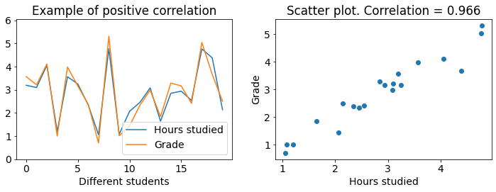
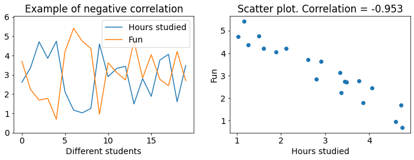
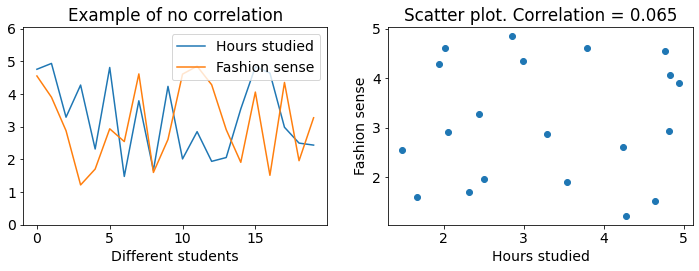
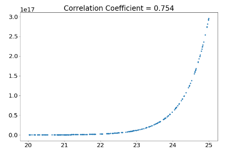

Plotting and Correlation¶
Learning Goals¶
After this week, the student will be able to:
Create different types of plots
Calculate the correlation coefficient
Relate the concepts of correlation and causation
Examine data using the concepts of expected value, standard deviation and correlation
Plotting¶
Visualization is a powerful tool for interpreting data. As you have already seen, finding the expected value, variance and standard deviation does not always tell you the whole story. Python has a plethora of tools for plotting. The standard one, called matplotlib is the one we will be using. We import it differently from how we have been importing randint, since the module matplotlib has many different functions we want to access without having to import each seperately.
from random import randint
import matplotlib.pyplot as plt
Line plot¶
We can create a line plot with the function plot(). The function plot() takes the x-coordinates and the y-coordinates of our data as arguments. Here we are plotting the gross domestic product of Norway from 1973 to 2019. (Source: https://www.ssb.no/nasjonalregnskap-og-konjunkturer/faktaside/norsk-okonomi)
year = [1973, 1974, 1975, 1976, 1977, 1978, 1979, 1980, 1981, 1982, 1983, 1984, 1985, 1986, 1987, 1988, 1989, 1990, 1991, 1992, 1993, 1994, 1995, 1996, 1997, 1998, 1999, 2000, 2001, 2002, 2003, 2004, 2005, 2006, 2007, 2008, 2009, 2010, 2011, 2012, 2013, 2014, 2015, 2016, 2017, 2018, 2019]
bnp = [32810, 37736, 42887, 48713, 54654, 60086, 66061, 77895, 89028, 98256, 108929, 122340, 135421, 139648, 151634, 157759, 167649, 176792, 185391, 189691, 198377, 206900, 220945, 240719, 259092, 262482, 283665, 335626, 346565, 343978, 354965, 388296, 430427, 475536, 499065, 546765, 502924, 530036, 563827, 590617, 604552, 611359, 599389, 591684, 624484, 664483, 660400]
plt.plot(year, bnp)
plt.show()
Bar Plot¶
Bar plots are useful for comparing the values or quantities of things. We can create one using the function bar(). bar() takes two arguments, the names of the bars, and the heights of the corresponding bars.
We can illustrate the population of Norway, Finland and Denmark with a bar plot:
country = ["Norway", "Finland", "Denmark"]
population = [5.415001, 5.539463, 5.789215] #millions
plt.bar(country, population)
plt.show()
Histogram¶
A histogram counts how many times each number appears in a list and plots the results. Histograms are made with the function hist(). The first argument should be the list we want to make a histogram of, the rest are optional, but are needed to make the columns properly centered.
We can illustrate the results of 1000 dice throws using a histogram. We can also add a title to our plot with plt.title():
diceResults = []
for i in range(1000):
dice = randint(1, 6)
diceResults.append(dice)
plt.hist(diceResults, bins = [1,2,3,4,5,6,7], align="left", rwidth=0.8)
plt.title("Occurences of dice throw results")
plt.show()
We can expand on the idea in the previous example to plot the sum of two dice throws.
Let’s plot 1000 sums of two dice throws.
diceResults = []
for i in range(1000):
dice1 = randint(1, 6)
dice2 = randint(1, 6)
total = dice1 + dice2
diceResults.append(total)
plt.hist(diceResults, bins=range(2,14), align="left", rwidth=0.8)
plt.show()
As you might expect, a sum of 7 is much more common than a sum of 12.
Scatter plot¶
If we want to plot the age of death and yearly ice cream consumption of indivudual people to see how the two values are related we might want to make a scatter plot with scatter().
Here is an example of how to do that with made-up data. It seems like labeling the x- and y-axis would be useful here. We can do that with plt.xlabel() and plt.ylabel():
age = [65, 75, 67, 59, 54, 67, 62, 54, 56, 58, 60, 61, 73, 66, 64, 61, 71, 75, 74, 66, 65, 59, 59, 58, 63]
iceCream = [6, 6, 6, 8, 9, 4, 11, 9, 10, 9, 8, 9, 5, 8, 10, 11, 6, 6, 6, 5, 6, 11, 8, 10, 8]
plt.scatter(age, iceCream)
plt.title("Ice cream consumption vs. Age of death")
plt.xlabel("Ice cream consumption")
plt.ylabel("Age of death")
plt.show()
Each dot represents one person. It looks like people who eat more ice cream die sooner. Such a connection is called a correlation, which is the topic of the next section.
In-Class Plotting Exercises¶
Plot these data with the suitable plotting function
a) Temperature in Oslo and Bergen on certain days. (Made-up data)
osloTemp = [0, -1.71, -3.05, -4.33, -5.15, -4.15, -2.09, 0, 1.83, 4.49, 5.53, 4.31, 2.77, 1.45]
bergenTemp = [-5, -3.72, -2.24, -0.4, 2.26, 4.18, 4.36, 3, 4.16, 4.66, 2.06, -0.48, -2.36, -4.04]
b) 2017 Norwegian parliamentary election. (Source: https://en.wikipedia.org/wiki/2017_Norwegian_parliamentary_election)
party = ["Ap", "H", "FrP", "Sp", "SV", "V", "KrF", "MDG", "R"]
votes = [800949, 732897, 444683, 302017, 176222, 127911, 122797, 94788, 70522]
Recognizing Types of Correlation¶
Two events are correlated if they tend to happen at the same time, or if they tend to not happen at the same time. If two events are not correlated, there are no such patterns. One measure of correlation is the pearson correlation coefficient. It will be explained at the end of this section, and you will be shown how it is calculated in the next section. In the following examples it will simply be given in the title of the scatter plots.
First let’s look at an example of positive correlation:

Both figures show the same data. The left figure is a line plot where grades and hours studied have seperate lines which we see have a strong correlation since they mostly move up together and down together. The right figure is a scatter plot where the correlation is apparent due to all of the data points almost forming a line. Higher grades coincide with more hours studied. Lower grades coincide with less hours studied.
Now let’s look at an example of negative correlation:

We see that fun and hours studied are negatively correlated. This can be recognized from how the lines mostly move opposite of each other. When one moves down the other moves up. And on the scatter plot we see that the data forms a line which tends downwards. Higher grades coincide with less fun.
The final example shows data with almost no correlation:

The lines seem to move independently from each other, and the scatter plot is spread out, not forming a line at all. This is an example of data with close to no correlation.
The pearson correlation coefficient takes values from -1 to 1. A value of 1 means a perfect linear correlation, a value of 0 means no correlation and a value of -1 means a perfect negative correlation. If a number inbetween (ie. 0.7) means a strong or weak correlation depends entirely on context. If you’re trying to prove a law in physics, 0.9 is very low, but in the social sciences 0.9 can be a very strong correlation.
Extra: The pearson correlation coefficient only has any meaning when we are looking at linearly correlated, normally distributed data. Linearly correlated means that one value does not start increasing faster or slower in relation to the other when they both grow. An example on a non-linear relation is the year and population of the world, as the population is currently growing much faster than before. Normally distributed data appear in many real world examples, like peoples height, where most are around the average while fewer people are much shorter or taller. (Further reading to know when to use the pearson correlation coefficient: https://en.wikipedia.org/wiki/Pearson_correlation_coefficient, https://en.wikipedia.org/wiki/Normal_distribution)
Calculating Correlation¶
Now that you know the difference between positive, negative and no correlation, it is time to calculate the correlation coefficient. The calculation consists of three steps: Scale, multiply, average.
We want to find out if ice cream consumption is correlated with age of death. We have recorded the ice cream consumption and age of death of 25 individuals, which we will analyze. First, we plot the data like we did in the previous examples.
We use a library called numpy to turn our lists into arrays. Arrays are basically lists which we can use for maths, like for multiplying an array of numbers by 2, or adding 100 to every element of an array. You are not expected to know how to use numpy or arrays yet (this is covered much later in this course), just try to follow the maths.
import numpy as np
age = np.array([65, 75, 67, 59, 54, 67, 62, 54, 56, 58, 60, 61, 73, 66, 64, 61, 71, 75, 74, 66, 65, 59, 59, 58, 63])
iceCream = np.array([6, 6, 6, 8, 9, 4, 11, 9, 10, 9, 8, 9, 5, 8, 10, 11, 6, 6, 6, 5, 6, 11, 8, 10, 8])
plt.figure(figsize=(12,8))
plt.subplot(221)
plt.plot(age, label = "Age of Death")
plt.plot(iceCream, label = "Ice Cream Consumption")
plt.legend()
plt.subplot(222)
plt.scatter(age, iceCream)
plt.xlabel("Age of Death")
plt.ylabel("Ice Cream Consumption")
plt.show()
The scatter plot seems to form some sort of line, but it is impossible to tell what the correlation coefficient should be just from looking at it.
The line plot is even less useful, the lines are at totally different scales. The age of death is much higher, and has much larger variations than ice cream consumption. This is a big problem when we want to compare the two values for different individuals. The first step to remedy this problem, and to calculate the correlation coefficient, is to scale the data.
Step 1 - Scale¶
Imagine that you drag the age of death line (the blue one) straight down to the ice cream line (orange). Then, it would be much easier to see whether the lines move together, opposite or independently. The age of death line would still move up and down much further however, which we can fix by just squeezing the line until it varies as much as the ice cream line. If we dragged the age of death line down, and squeezed it the right amount we would get a line plot much more like the examples in the previous section, with the hours studied plots.
This is not a very systematic approach however. What we do instead is drag both lines (blue and orange) down until they have a mean of 0, and then squeeze them until they have a standard deviation of 1.
For this we need the mean and standard deviation of the data. You learned how to calculate this with for-loops in the previous lecture, but we will here just use the function np.mean() and np.std(), as should you, given that you know how the functions work and are not asked not to use them. You should become used to reading the documentation of functions you wish to use. Open these links to read how np.mean() and np.std() work and are used.
Below is a plot of the age of death data scaled by its mean and standard deviation. Note how the shape of the line is the same as before the scaling, just that the values are now around 0 and don’t vary too much.
age_scaled = (age - np.mean(age)) / np.std(age)
plt.figure(figsize=(20, 12))
plt.subplot(331)
plt.plot(age)
plt.title("Original Data")
plt.subplot(332)
plt.plot(age - np.mean(age))
plt.title("Data - Mean")
plt.subplot(333)
plt.plot((age - np.mean(age)) / np.std(age))
plt.title("(Data - Mean) / Standard Deviation")
plt.show()
When we scale both the age of death data and the ice cream data and plot them together, we get this plot:
iceCream_scaled = (iceCream - np.mean(iceCream)) / np.std(iceCream)
plt.plot(age_scaled, label = "Age of Death")
plt.plot(iceCream_scaled, label = "Ice Cream Consumption")
plt.legend()
plt.show()
Now it is easier (but still not fun!) to see whether the data is correlated.
Step 2 - Multiply¶
Now comes a very important observation: If the scaled age of death and ice cream consumption are both high at the same time, their product is positive. If they are both low, their product is still positive, since a negative times a negative gives a positive. This means that (scaled) values which vary together always give a positive product.
When we have a high age of death and a low ice cream consumption, we get a negative product. Positive age, negative ice cream. We also get a negative product when the age of death is low and the ice cream consumption of an individual is high. This means that (scaled) values which vary in opposite directions always give a negative product.
Below we have plotted the product of the scaled age of death and ice cream consumption. Look at the y-axis, are the values mostly negative or mostly positive?
plt.plot(age_scaled * iceCream_scaled)
plt.hlines(np.mean(age_scaled * iceCream_scaled), xmin = 0, xmax = 24, color="red", linestyle="--")
plt.title("Scaled values multiplied together (mean shown in red)")
plt.show()
Step 3 - Average¶
It looks like the product is mostly negative. Following the observation that scaled values which vary in opposite directions give a negative product, we can conclude that the data are negatively correlated. If the data varied together as much as they were opposite, the average would be close to zero, and there would be no correlation.
But “mostly negative” is not a very good measure. We instead take the mean value of the product, as shown by the red dashed line in the figure above.
corr = np.mean(age_scaled * iceCream_scaled)
print(corr)
-0.705955340971355
This mean of the product of the scaled values is the pearson correlation coefficient! -0.7 is a pretty strong negative correlation in this case.
All of the steps we took to find it can be condensed into these three very dense lines of code. If you were to calculate the means and standard deviations yourself like you did in the previous lecture, it would be much more of a hassle.
age_scaled = (age - np.mean(age)) / np.std(age)
iceCream_scaled = (iceCream - np.mean(iceCream)) / np.std(iceCream)
print(np.mean(age_scaled * iceCream_scaled))
-0.705955340971355
Even these three lines are a hassle though, when we can just use the pearsonr() function from scipy.stats.stats. You should just use this when calculating the correlation coefficient, no need to reinvent the wheel, as long as you understand how to use it.
from scipy.stats.stats import pearsonr
print(pearsonr(age, iceCream))
print(pearsonr(age, iceCream)[0]) # if you only want the correlation coefficient
(-0.7059553409713553, 8.051146825575674e-05)
-0.7059553409713553
Extra: The second number returned by pearsonr() is a two-sided p-value. It is the probability that a population with no correlation would give us a sample with a correlation greater than or equal to the one we found in magnitude.)
Controlling for a variable¶
In our case -0.7 is a pretty strong correlation. So why are these variables correlated? Is it because eating more ice cream causes you to die sooner? Proving that this is true is impossible, the only thing you can do to support such a claim is show that the correlation is not random, that dying sooner does not cause eating more ice cream, and that the correlation is not caused by a third, common-causal variable, among other things.
We expand our example so that we also know the gender of the people we are looking at. Maybe being male causes you to die sooner and eat more ice cream? If this is the case, eating more ice cream and dying sooner will not be correlated within the male population.
Let’s first sort the data into a male population and a female population.
male = [False, False, False, True, True, False, True, True, True, True, True, True, False, True, True, True, False, False, False, False, False, True, True, True, True]
age_Male = []
iceCream_Male = []
age_Female = []
iceCream_Female = []
for i in range(len(age)):
if male[i] == True:
age_Male.append(age[i])
iceCream_Male.append(iceCream[i])
else:
age_Female.append(age[i])
iceCream_Female.append(iceCream[i])
Now, let’s use the pearsonr() function to calculate the correlation between eating ice cream and dying sooner in each of the populations seperately.
print(pearsonr(age_Male, iceCream_Male))
print(pearsonr(age_Female, iceCream_Female))
(-0.06109050664155455, 0.82877185216734)
(0.23396392997339183, 0.515311044747241)
There is almost no correlation! We have now shown that this made-up data shows no causal relation between ice cream consumption and dying sooner. Being male is simply correlated with both eating more ice cream and dying sooner, and being female correlates with eating less ice cream and dying later. Note that the data shows that eating more ice cream is not making men die sooner than men eating less ice cream!
If we scatter-plot again and color code the genders this becomes readily apparent.
plt.scatter(age_Male, iceCream_Male, label="Male")
plt.scatter(age_Female, iceCream_Female, label="Female")
plt.title("More ice cream does not kill you")
plt.xlabel("Age of death")
plt.ylabel("Ice cream consumption")
plt.legend()
plt.show()
In-Class Calculating Correlation Exercises¶
a) There is clearly a very strong relation visible in this scatter plot. Why is the pearson correlation coefficient so low?
